人类的边界
一个人最初能看见多少，能走到哪里，又能承受什么？
《无限人族进化》的旅程由这些朴素的问题展开。人类的身体有边界，感官有盲区，知识也有尽头。进入陌生世界时，走廊转角之后的声音、淹没道路的水、仍在工作的机械，都可能成为一道无法轻易跨越的门槛。
成长意味着这些边界逐渐改变。力量与生命之外，人会获得新的观察方式，建立新的空间认识，找到过去无法到达的路径。世界因此显露不同的面貌。
归航
归航站连接着一次又一次旅程。它是一座小型技术中继站：世界门、任务终端、能力整备、储物与休息，共同围绕着返回与再次出发组织起来。
这里的设备有清楚的用途，金属结构有真实的重量。稳定的灯光与可辨认的功能区，让归航站成为陌生世界之间的参照。玩家带回的既是物品与能力，也是对下一次旅途的判断。
门后的世界
灰巢设施将人置于失常的工业与生物安全系统之中。雾港余烬让视线退到声音之后，潮水和干扰信号不断改变判断。钟骨工厂把压力、热和机械运动变成空间的一部分。
这些世界不只是更换景色。它们分别提出不同的问题：怎样理解被封锁的设施，怎样在看不清时寻找方向，怎样穿过仍在运行的危险结构。一个世界中获得的经验与能力，也为另一个世界提供新的解法。
在更远的图景中，倒影界展现宁静而不可思议的自然；沙丘魔海让干燥沙海与生物绿潮相互侵吞；遗泽以古老建筑和精密能量设施留下另一种文明的尺度。
看见、理解、抵达
看见并不等于理解，知道位置也不等于能够抵达。
后视感知改变朝向带来的盲区；生命体征让威胁的状态变得可读；声学映射从声音中组织空间；测绘留下走过的地形与连接。移动与环境适应则让这些知识获得新的用途。
每一种进化都有明确的边界。能在空中跨出一步，不等于自由飞行；能够减轻热伤害，也不意味着一切环境危险都失去意义。限制被改变，新的选择才会出现。
从环境读出故事
世界的故事分布在房间结构、设备响应、日志、对白与道路变化之中。恢复供电后的门控、局部解除的封锁、仍在呼叫的信标，都是玩家能够观察和追查的线索。
未知网络的起源与目的仍留在旅途的远方。人物的推测与亲眼看到的事实之间，也保留着距离。故事不急于替所有疑问给出答案，而让每次抵达增加一点认识。
行走其间的人
岑遥
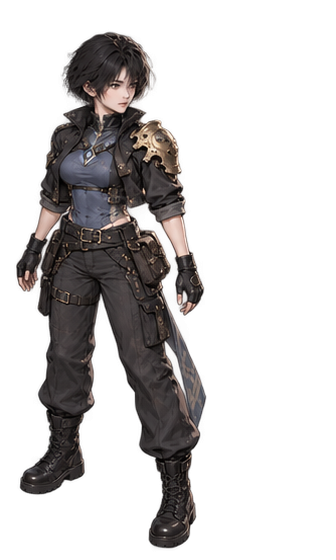
岑遥 · 人物造型
岑遥是这段旅程的中心。她以普通探索者的身体和感知进入未知世界，逐步获得超出原有经验的能力。人物的变化首先来自行动与认识，而不是开局就拥有无所不知的视野。
短黑发、炭灰短外套、青灰内层、深色工装裤和工业靴，构成她清楚而克制的轮廓。单侧结构与胸前标识打破对称，使人物即使缩小到场景尺度，也保有可辨认的身份。
她的装备语言从实用的人类技术出发。金属、织物、连接件和随身配件应让人相信它们可以被穿戴、使用和维护。随着旅程展开，超自然能力逐渐进入这个最初朴素的形象。
同一个人，不同的起点
智力、体力与精神力描述的是同一主角的初始倾向。它们改变起步时的优势与成长侧重，并不把旅人分成彼此隔绝的职业。
智力者
以学习与理解见长。技能熟练度的积累和知识的运用，是这一倾向的重要表现。
体力者
更侧重身体基础。体素相关的生命与环境耐受等能力，体现身体成长带来的连锁收益。
精神力者
以较高的初始精神力与精神强化收益形成差异。涉及精神探测的能力，仍有各自需要满足的条件。
三种起点共用技能、道具与血统体系。不同的面板影响何时达到条件、怎样安排投入，不另设只有某一身份能够访问的技能商店。
白芷
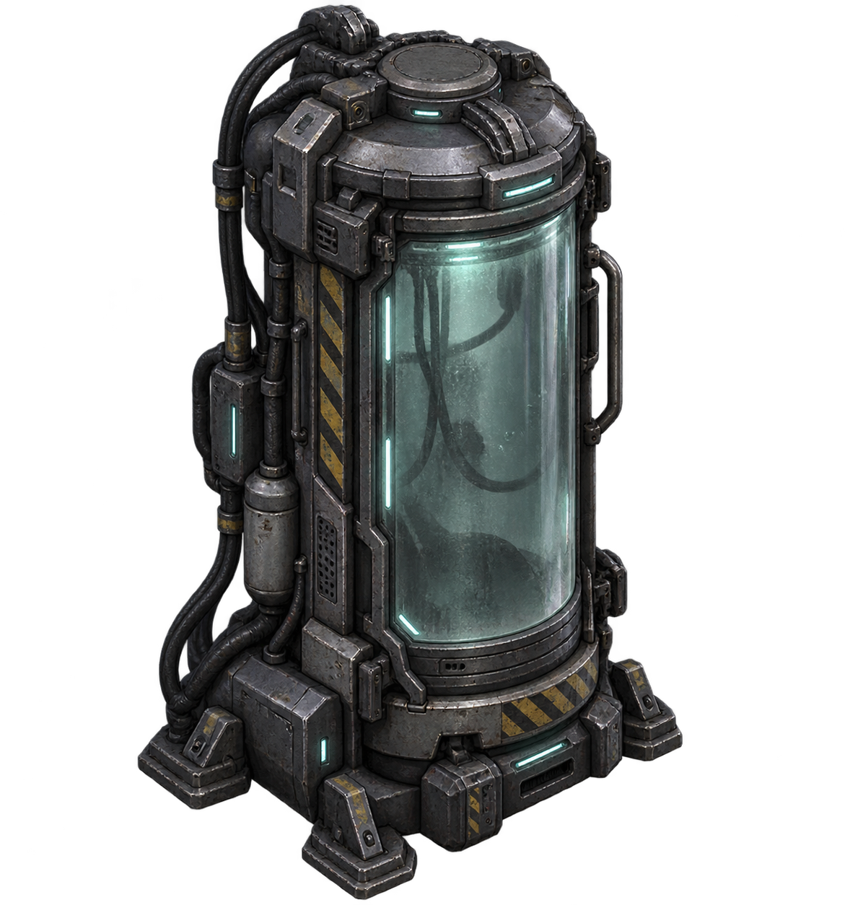
灰巢 · 生物隔离设施
白芷出现在灰巢的生物隔离区。她使冰冷的设施调查出现一个具体的人：面对警告与请求，岑遥需要决定是否答应帮助，或者将她留在那里。
承诺与结果之间并不划等号。答应帮助是旅人作出的选择，而灰巢的供电、封锁与主线通路仍遵循各自的因果。
人物与世界的尺度
人物不应被环境细节淹没。角色轮廓、衣饰重心与动作朝向需要在斜视空间中保持清楚；配件和装备应从属于人物，而不是将她变成一组堆叠的发光符号。
敌人的造型同样服务于识别：感染维护工保留设施人员的职业痕迹，哨卫展现自动防卫的重量，雾港异形与钟骨铸造机械则分别嵌入所在世界的材质与威胁语言。
门后的世界
归航站
归航站是一座服务于出发与返回的小型技术中继站。世界门、任务终端、能力整备和储物空间围绕清楚的通路展开。它的可靠感来自可理解的结构与功能：墙体有厚度，设备有脚点，光照有来源。
暗钢、蓝灰与少量温暖光线让这里成为旅途的停靠点。它不需要像城市一样宏伟，却需要让每一次返回都能辨认自己所处的位置。
灰巢设施 · B-17 回收层
灰巢的空间围绕供电、门控、隔离与防卫组织起来。冷凝、管缆、金属壁板和生物安全设备构成它的表面；失常的运行秩序则构成探索的压力。
旅程从维护入口深入主电室，穿过 Gate A 与中央竖井，再接近封锁控制和生物隔离区。Gate B 之后，深层消杀与自动防卫把设施的危险推向更直接的对抗。信标与出口，将这次深入重新连接到归航的方向。
空间节点：维护入口、主电室、Gate A、中央竖井、封锁控制区、生物隔离区、Gate B、深层消杀区、哨卫区域、信标室、出口。
雾港余烬
雾港的道路与水、石岸和信号纠缠在一起。视线会衰减，声音会穿过看不清的空间，水域则改变前进的代价。低饱和冷光照着湿石与旧金属，让近处细节与远处不确定性同时存在。
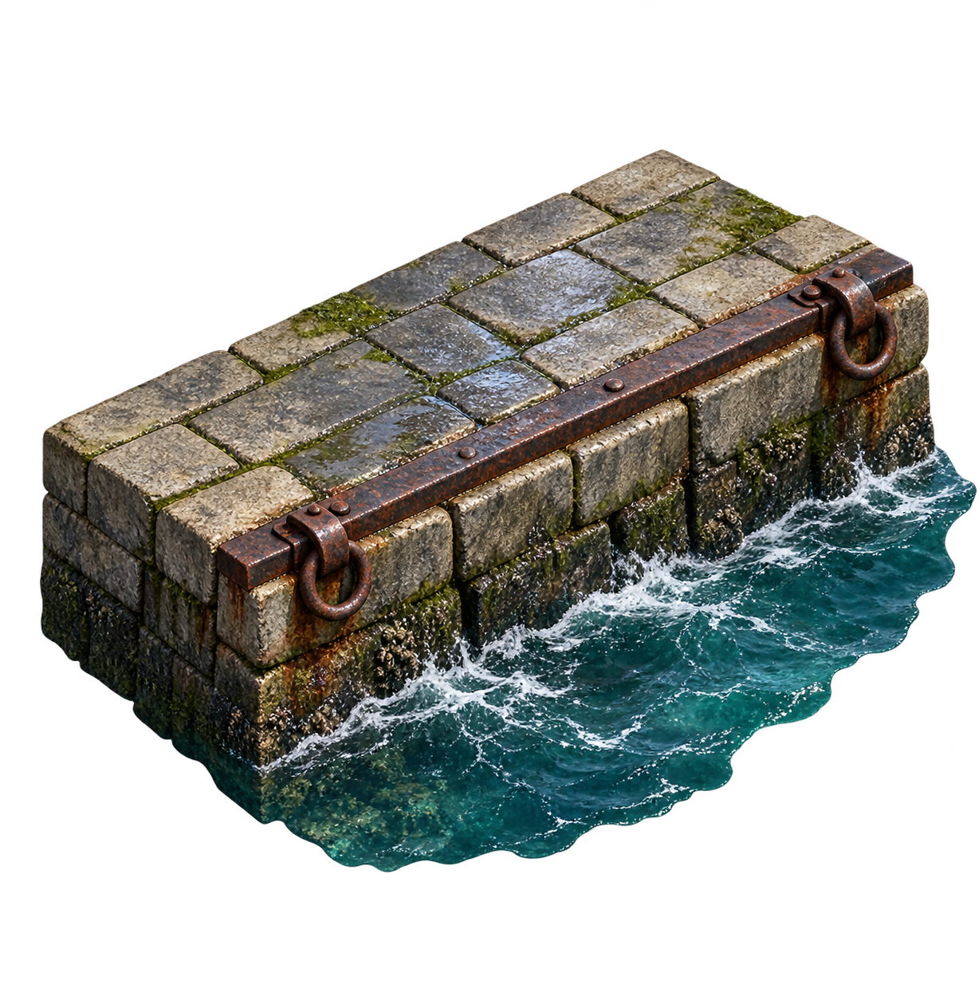
雾港 · 石岸与水域边界
从雾中码头进入潮汐仓库与信号场，旅人沿沉没岸台和防波堤寻找定位依据。泵站、共鸣塔与守望者区域，使水位、声音与威胁相互关联，最终通向撤离点。
空间节点：雾中码头、潮汐仓库、信号场、沉没岸台、防波堤、泵站、共鸣塔、守望者区域、撤离点。
钟骨工厂
没有人员值守的生产线仍在运转。暗钢结构、蒸汽、炉光与压力管道，使钟骨工厂像一套仍未停下的庞大机构。地面也并非永远静止，输送表面和垂直机械让空间带有节奏。
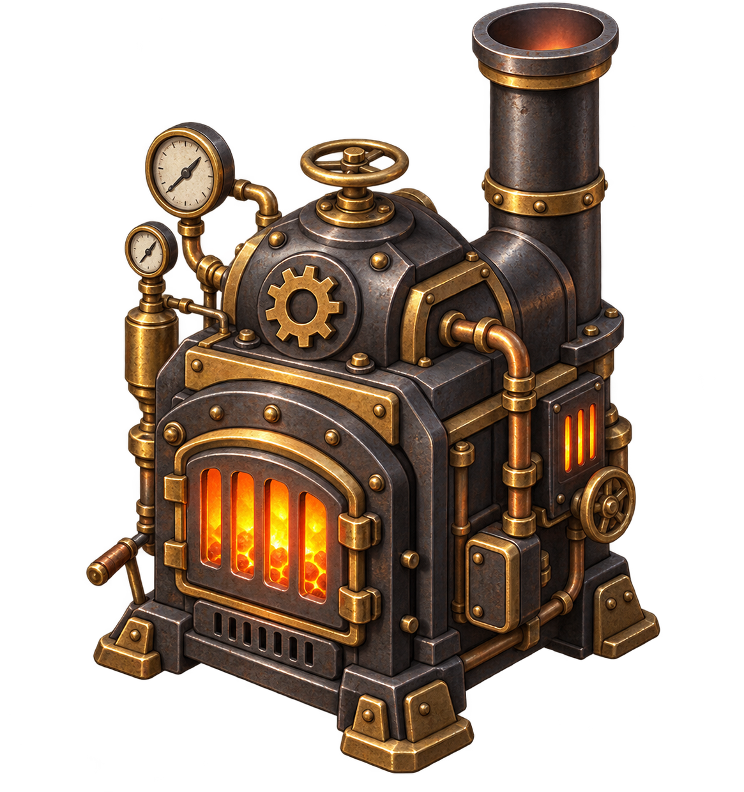
钟骨 · 炉体与工业设备
铸造入口连接压力大厅、输送桥和锅炉室。齿轮竖井将旅程引向垂直方向，炉心、铸造卫士区域与调节核心逐渐揭示这座工厂的运行强度，停机出口则成为这一段旅程的收束。
空间节点：铸造入口、压力大厅、输送桥、锅炉室、齿轮竖井、炉心、铸造卫士区域、调节核心、停机出口。
异位面·倒影界
倒影界将熟悉的自然关系轻轻翻转。逆流之河、倒悬草地与静止的雨组成平原的第一层奇观；荧光石林与水晶回廊把光与声音带向更深处。
倒影界 · 倒悬星海与界域阙
到了星海，脚下与头顶都向辽阔的星空敞开。远处的界域阙没有门扇，拱内如一条安静竖立的光河。这里的魅力来自自由漫游和奇观，而不是急于将一切转成灾难的征兆。
地域层次：F1 倒映平原；F2 荧光石林；F3 倒悬星海。
沙丘魔海
沙丘魔海以干燥与繁生之间的冲突建立自己的尺度。黄沙磨损人造结构，废墟半埋于地表，而远处的绿潮像生物性的幕墙压向地平线。
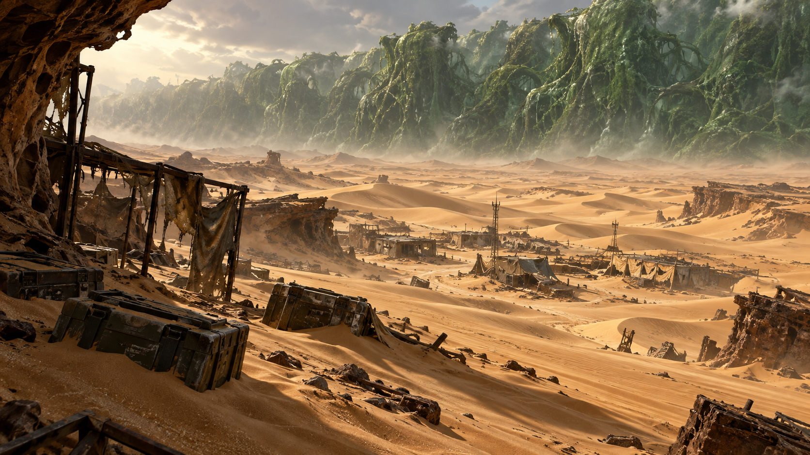
沙丘魔海 · 营地 B 与绿潮地平线
穿梭机残骸是旅途的起点。穿过风蚀隧道，真正的沙地、废屋和半埋补给箱逐渐展开；绿潮与更深处的共生体母巢、洞穴构成另一种生存空间。风景的宏大与近处补给的有限，形成持续的张力。
地域层次：F1 坠毁穿梭机残骸；F2 沙漠地表与绿潮战场；F3 共生体母巢；F4 沙丘洞穴。
遗泽
遗泽以古老建筑与精密能量设施并置。尘埃、风化与厚重结构说明时间的存在，仍可辨认的网格、核心与引擎则保留着用途的痕迹。
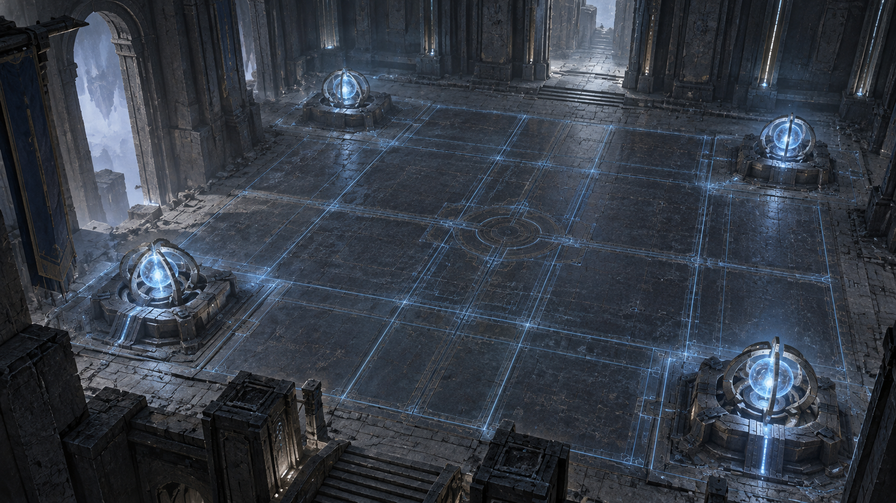
遗泽 · 中庭能量矩阵大厅
冷蓝网格铺展在大厅地面，四角的四枚核心微微发光。中央空间保持开阔，让建筑的尺度与能量结构的秩序一眼可读。更深处的电池库、档案馆、守卫引擎库和圣所，将这片遗迹分成不同层次。
地域层次：F1 尘封巨门前厅；F2 中庭与能量矩阵大厅；F3 守卫引擎库；F4 遗泽圣所。
成长与选择
一次旅程
整备、进入世界、探索、战斗、改变通路、完成目标、返回归航站。这个循环让世界中的发现转化为下一次出发的准备。
能力不只提高同一件事的效率，也改变玩家能够考虑的方案。重新来到熟悉地点时，新的感知可能让隐藏的威胁变得可读，新的移动手段可能让旧路线出现另一种走法。
战斗的节奏
普攻、冲刺、脉冲、防御与穿刺构成不同的动作语言。普攻重视出手与恢复的节奏；冲刺强调方向和位移；脉冲向周围展开；防御有明确的朝向；穿刺以线性作用建立辨识度。
攻击预警、环境危险与地形共同影响时机。战斗并不发生在一张没有意义的背景上：水域、输送表面、护栏、高差、热与压力都参与玩家对空间的判断。
情境跨越让动作与特定通路发生关系。空踏保留跨越的意味，而不是把所有空间约束一并抹去。
信息是一种资源
没有走过的地方需要探索，没有被感知的实体不能凭相机缩放凭空出现。记忆中的地形、当前可见的敌人、模糊的声源线索，是不同类型的信息。
- 本地地图组织已经获得的空间知识。
- 后视感知改变身后信息的可达性。
- 生命体征帮助辨认目标状态。
- 声学映射让声音成为理解环境的另一条路径。
地形测绘不等于全敌人侦察，声音也不必总是给出精确坐标。能力的差异因此既影响行动，也影响判断。
技能、装备、道具与血统
这些是构筑的不同来源。技能组织主动行动与持续能力；装备通过穿戴改变角色；道具具有自己的使用条件与作用时机；血统则触及更深的成长与规则变化。
可以取得一件物品、满足学习条件、能够支付一次使用成本，是不同的问题。构筑的价值来自这些条件之间的组合，而非仅把所有数值相加。
两个来源可以共同支持一种感知；移除其中一个，另一个仍可能维持它。环境适应也有明确对象：热抗与生命值不同，水域移动改善与深水通行不同。装备位置与来源之间的关系，为选择保留取舍。
熟练与倾向
技能通过有效使用积累熟练。不同初始属性影响成长的侧重，但不会将整个能力体系切成互不相通的职业分支。
身体、感知、信息和移动提供不同方向的进化。玩家可以继续强化长处，也可以用新的来源补足限制。每一次投入都应使角色更接近自己选择的行动方式。
世界留下的变化
恢复的供电、已操作的阀门、泵站状态、人物支线和首通奖励，各自记录着旅程留下的结果。返回与重访不应抹去这些因果，也不应把一次性的发现变成无限重复领取的奖励。
成长使人能够走得更远，而对世界的记忆，使下一次出发不再从零开始。
形体、材质与光
从可相信的细节建立世界
《无限人族进化》的视觉以固定斜视角 2.5D 空间展开。完整场景、模块化物件与角色共同组织画面，精度服务于识别和氛围。远看有清楚的大形，走近有可信的材质和结构。
成熟、暗稳、精密、工业、克制，是人类技术空间的共同语言。超自然的部分通过世界与能力逐步出现，不将所有场景变成同一种发光玻璃界面。
空间的层次
画面首先回答：哪里可以走，哪里是边界，门通向哪里。接着才是表面的接缝、磨损与光泽。
墙体需要厚度，物件需要接地。前景结构与角色之间的遮挡应有秩序，栏杆、高差和水岸都要让空间关系容易理解。阴影不是遮掩形体错误的黑块，而是说明接触与重量的线索。
地面、墙面和设备使用不同的中尺度结构。纹理过密会损失轮廓，颜色过于均匀则失去材料差别。精致感来自恰当的层次，而不是无差别地增加噪点。
四种工业气质
归航站强调稳定与可靠；灰巢强调生物安全设施的冷静秩序；雾港以湿石、旧金属和冷光承接雾与水；钟骨则由暗钢、炉光、蒸汽与厚重机械构成。
相同的视觉清晰度贯穿这些世界，但它们不共享完全相同的材料、照明与情绪。到了倒影界、沙丘魔海和遗泽，空间的语言继续改变，作品的精度与可读性仍保持一致。
人物的轮廓
角色必须能在复杂环境中被认出。岑遥的短发、衣饰重心、非对称结构和深色实用服装，建立了她的身份；姿态与朝向则表达行动意图。
配件属于人物，而不是抢走人物的主体。敌人也需要明确的大轮廓：防卫机械的重量、雾港生物的异样、铸造构件的硬度，先于细碎装饰被读到。
界面的秩序
全局界面使用工业战术终端语言。生命、能量、任务、交互与角色信息拥有清楚的层级；世界主题改变材质和局部装饰，不改变信息的基本意义。
按钮、面板、图标与文字各司其职。边角与边框保持稳定，内容有足够的呼吸空间。颜色与形状共同帮助辨认，重要信息不只依赖细微色差。
图标在很小的尺度下仍要成立。它们以轮廓和少量关键细节传达对象，避免让文字、强光或过多纹理承担全部识别任务。
美术图录
这里按人物、设施、世界材质、敌人与界面组织作品的视觉语言。图像在各章中与相应的世界和对象相邻，帮助读者从整体气质走近具体结构。
人物与装备
岑遥 · 短发、深色实用服装与非对称装备结构
人物的服装与配件强调可穿戴、可维护的真实感。织物与金属在明暗和边缘上相互区分，重要标识保持克制。
归航站的设备
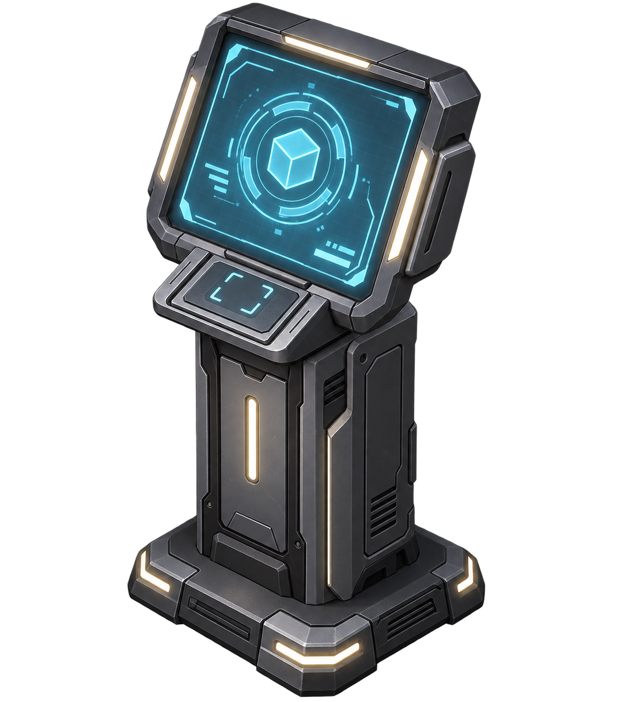
归航站 · 终端外壳与屏幕结构
终端的功能通过外形、屏幕与身份符号组织。南北服务区域与通路共同建立房间秩序，设备不应吞没人物活动的空间。
灰巢的设施语言
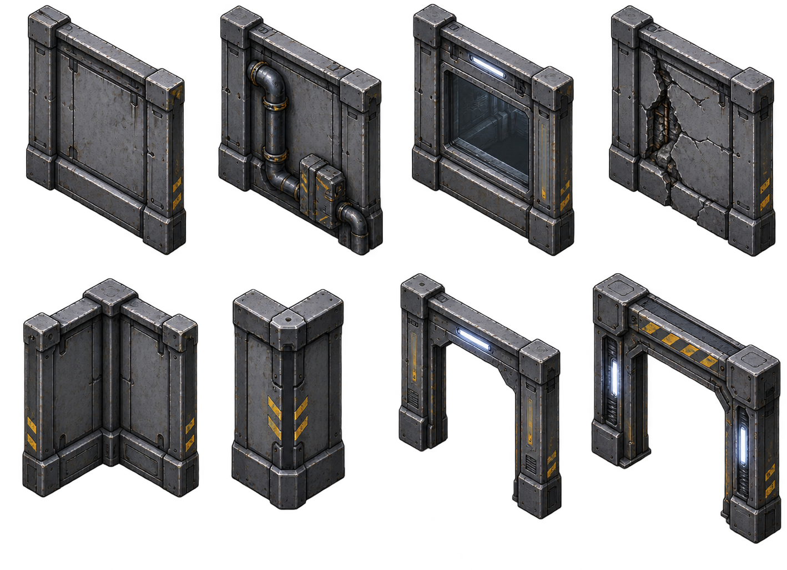
灰巢 · 墙板与结构接缝
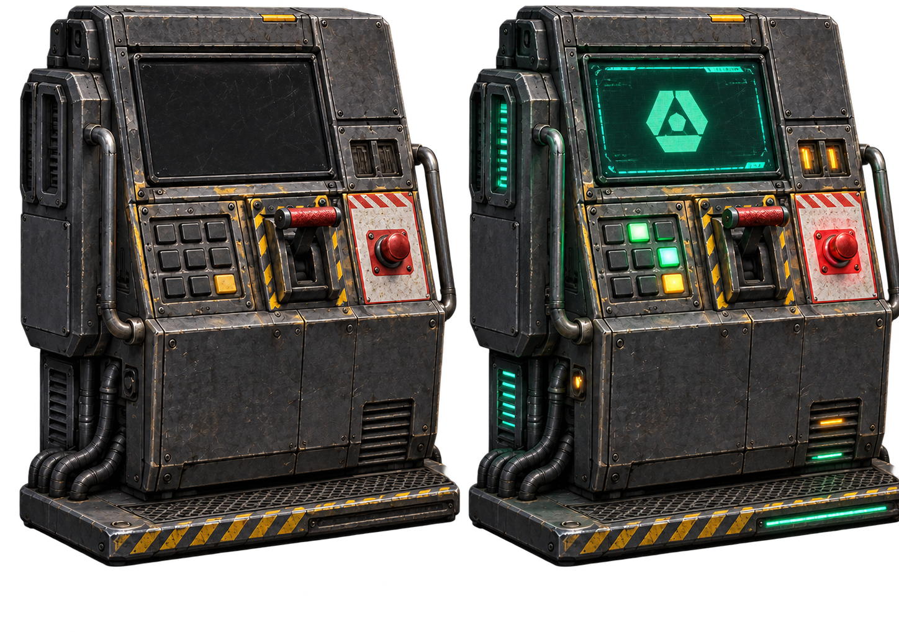
灰巢 · 动力控制台
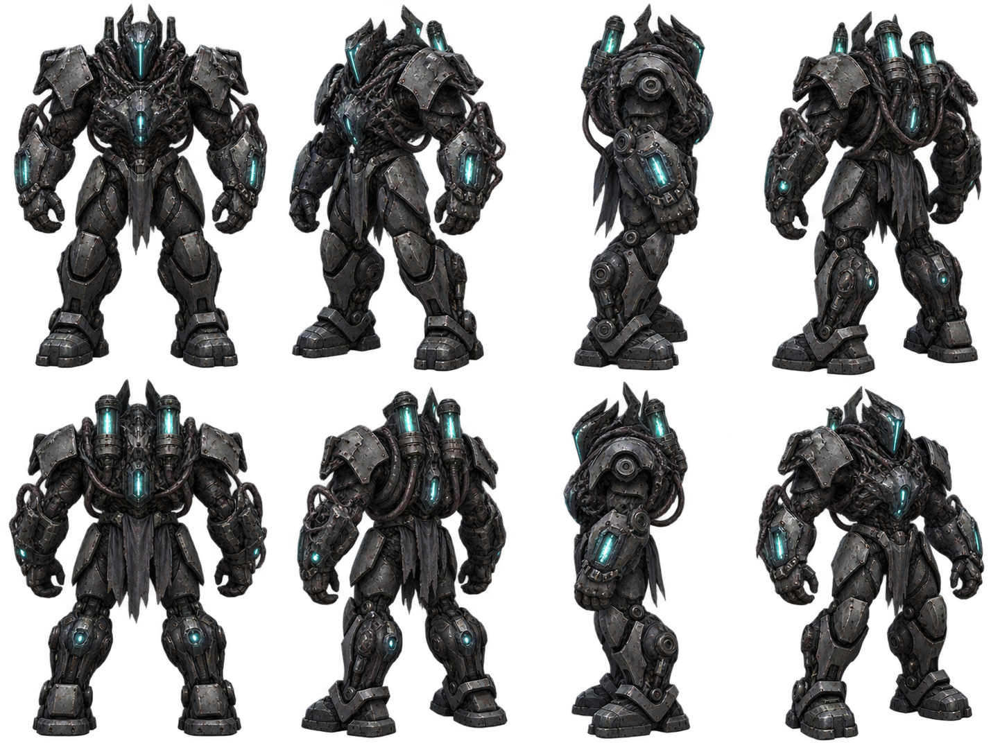
灰巢 · 自动防卫哨卫
冷金属、墙板分缝、管线和功能设备共同构成设施内部。控制台与防卫单元的造型，需要让人辨认它们各自的职责。
雾港的边界与威胁
雾港 · 湿石、水边与岸线层次
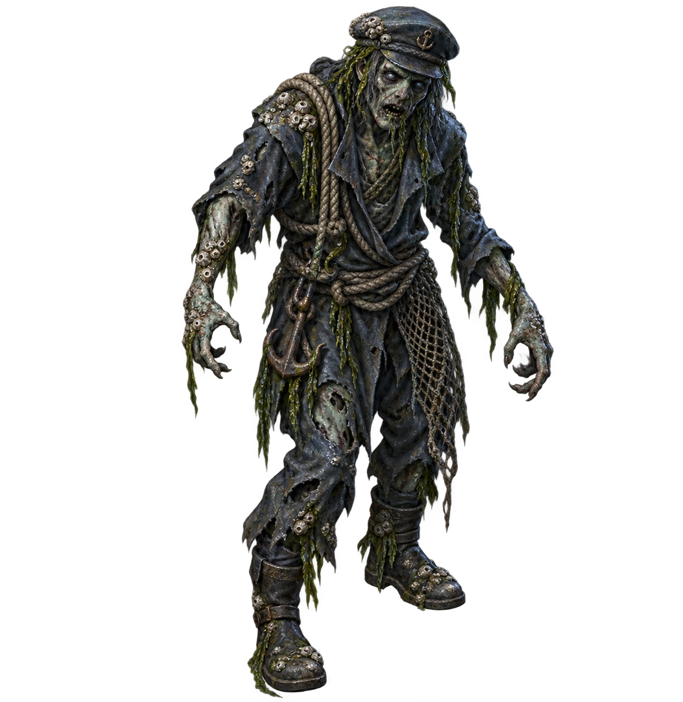
雾港 · 溺亡者
雾与湿润表面降低远处的确定性，近处轮廓仍须清楚。水边既塑造气氛，也帮助理解行进空间。
钟骨的压力与热
钟骨 · 炉体
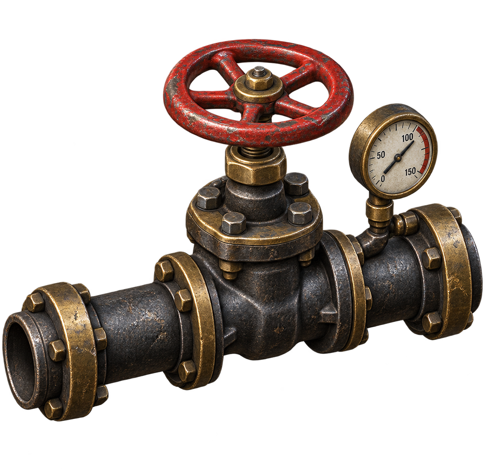
钟骨 · 压力管路阀门
厚重设备依靠结构、磨耗与局部热光建立尺度。机械的轮廓与连接关系比装饰性的光效更重要。
远方的世界
倒影界的星海、沙丘魔海的绿潮与遗泽的矩阵大厅构成三种截然不同的空间经验。完整图像与世界叙述见门后的世界。
图像阅读
本集使用人物造型、环境插画与物件设计图讲述作品的视觉世界。图像的作用由各页题注说明；它们不作为游戏运行画面的记录。